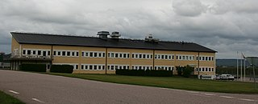

Koenigsegg
Koenigsegg Automotive AB es una empresa fabricante de automóviles superdeportivos exclusivos de lujo fundada en 1994 en Ängelholm, Suecia. Desde 1994 es dirigida por su fundador Christian von Koenigsegg, quien comenzó con la creación de su propio automóvil deportivo a los 22 años. La producción actual no supera las dos unidades al mes, aunque según responsables de la marca se podría aumentar la cadencia hasta cuatro unidades mensuales.
Historia
La compañía fue fundada en 1994 en Suecia por Christian von Koenigsegg, con la intención de producir un superdeportivo de clase mundial. Muchos años de desarrollo y creación de prototipos llevaron a la primera entrega de automóviles de producción de la marca que fue el CC, modelo que al final culminó en el CC8S de 2002. En 2006 comenzó la producción del CCX, que utiliza un motor creado internamente especialmente para ese vehículo. Es legal en la calle en la mayoría de los países, incluido en los Estados Unidos.12 En marzo de 2009, el CCXR fue elegido por Forbes como uno de los coches más bellos de la historia. El 16 de junio de 2009, General Motors y Koenigsegg confirmaron los detalles del acuerdo para que Koenigsegg fuera el propietario de Saab, que al final se rompió y condujo a la desaparición de este último.34 En diciembre de 2010, el Agera ganó el premio BBC Top Gear del superdeportivo del año. Además de desarrollar, fabricar y vender la línea de superdeportivos, Koenigsegg también participa en programas de desarrollo de "tecnología ecológica" que comienzan con CCXR "Flower Power" flex-fuel y continuaba con el Agera R. Koenigsegg también está activo en programas de desarrollo de sistemas de automóviles híbridos eléctricos enchufables y tecnologías de próxima generación motor alternativo. Koenigsegg también está funcionando en un motor de pistón sin cámara para el Regera.5 Koenigsegg desarrolla y produce la mayoría de los principales sistemas, subsistemas y componentes necesarios para sus automóviles en la empresa en lugar de depender de subcontratistas. A fines de 2015, tenía 97 empleados con un departamento de 25 ingenieros, dirigido por el fundador. En la compañía trabajaban poco más de 400 personas hasta febrero de 2021,6 con la colaboración de varias empresas, todas ellas también suecas.
Modelos

Su primer modelo fabricado fue el CC, seguido por el CC8S y posteriormente por el CCR de 806 CV (795 HP; 593 kW). Koenigsegg usa en las puertas de sus vehículos un sistema de "hélice sincrónica diedral", conocido en el mundo de los clientes automovilísticos como puertas "raptor", que parece combinar las ventajas de todos los diseños aunque con una considerable mayor complejidad mecánica. La continuidad está asegurada, ya la producción del CCX estaba pensado especialmente para el mercado americano y el CCXR que utiliza biocombustible E85. También existen versiones de edición limitada de estos modelos, de los que se proyectó hacer 14 CCX y 6 CCXR, pero la crisis económica mundial ha hecho que solamente se construyeran 2 CCX y 4 CCXR, de 888 y 1018 CV (876 y 1004 HP) (653 y 749 kW), respectivamente. El motor de ambos es de 5032 cm³ (5 litros) biturbo. El Agera Hundra creado en el año 2013, conmemora que la marca ya ha fabricado 100 modelos.